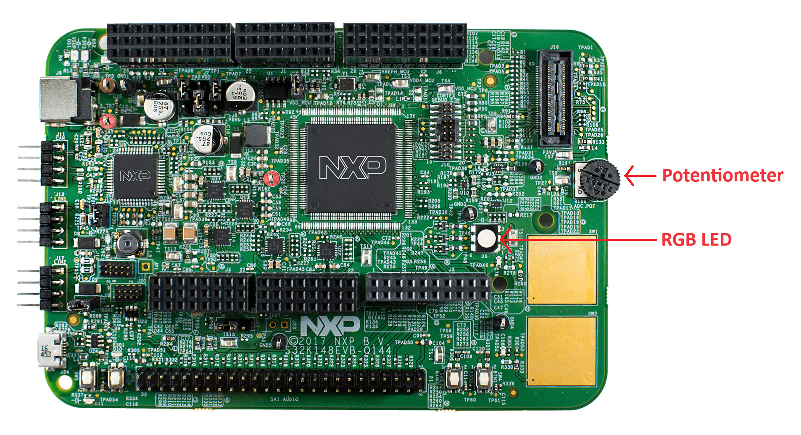

Using hardware I/O
Previous: Using UDS
If you have a S32K148 development board then you can test some of its hardware features and explore how they are accessed via the SDK. If you have been following the lessons and have successfully built and flashed an image on the S32K148 development board then you will find that if you turn the potentiometer on the board, then the board’s RGB LED will change its brightness.
{kind=link}
By searching the code base for the preprocessor definition PLATFORM_SUPPORT_IO
you will find that this is only enabled for the S32K148 build
and that this enables code in DemoSystem::cyclic() to read the ADC value controlled by the potentiometer as follows…
(void)AnalogInputScale::get(AnalogInput::AiEVAL_POTI_ADC, value);
and then set PWM values for each colour on the RGB LED based on the measured ADC value…
OutputPwm::setDuty(OutputPwm::EVAL_LED_RED_PWM, value * 10000 / 5000);
OutputPwm::setDuty(OutputPwm::EVAL_LED_GREEN_PWM, value * 10000 / 5000);
OutputPwm::setDuty(OutputPwm::EVAL_LED_BLUE_PWM, value * 10000 / 5000);
To see the actual ADC values, you can add a log line to print it on the serial console…
(void)AnalogInputScale::get(AnalogInput::AiEVAL_POTI_ADC, value);
Logger::debug(DEMO, "ADC value %d", value);
You may notice as you turn the potentiometer, the RGB LED’s brightness doesn’t change smoothly,
it is updated twice per second.
This is because DemoSystem::cyclic() is scheduled to run every 10 milliseconds
and within DemoSystem::cyclic() the timeCounter variable is used to execute
the above code only one time in 50 using the if statement …
if (timeCounter >= 50)
You can change this to update more often, say…
if (timeCounter >= 5)
then you should see the RGB LED’s brightness changing more smoothly as you turn the potentiometer.
If you dive deeper, you will find that code under executables/referenceApp/platforms/s32k148evb/bspConfiguration/
sets up the configuration of the software for this board.
In the main() function called at startup, the very first function called is StaticBsp::init() and this
initializes the board as configured by the code under executables/referenceApp/platforms/s32k148evb/bspConfiguration/.
This makes use of reusable APIs defined for BSPs for many different boards and SOCs.
Explore this code to further understand how the board’s hardware components are configured and then used.